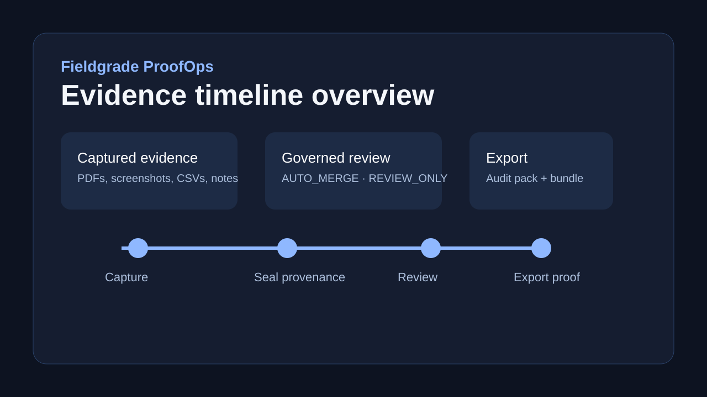
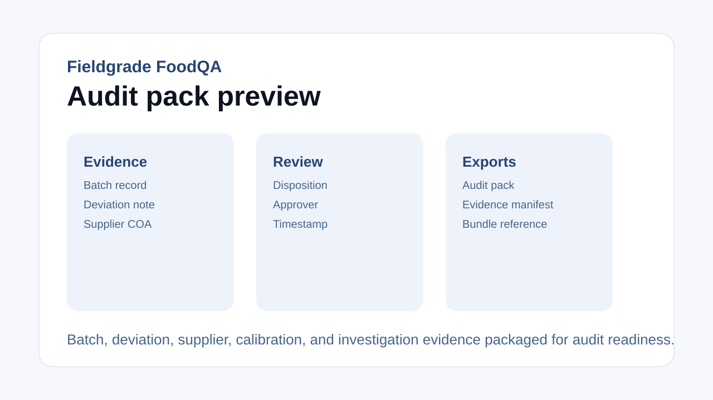

ProofOps
Evidence timelines, review workflow, operator dashboards, and audit packs for technical teams.
Fieldgrade gives technical and regulated teams a branded workspace for the operational evidence they already create: spreadsheets, PDFs, screenshots, supplier files, QA notes, and AI-assisted work. The result is sealed, reviewable, replayable proof without dragging a heavyweight ERP into the loop.
SAP runs the transaction layer; Fieldgrade proves the evidence layer.
One evidence substrate, packaged into buyer-facing offers that can be deployed quickly.
Evidence timelines, review workflow, operator dashboards, and audit packs for technical teams.
AI-use registers, prompt and output evidence, review gates, and accountability-ready exports.
Batch records, deviations, calibration evidence, supplier artefacts, CAPA context, and audit readiness.
Adapters, APIs, and import/export rails so Fieldgrade can sit beside existing QMS and ERP estates.
The repository already ships the technical substrate behind the commercial story.
Spreadsheets, emailed PDFs, screenshots, local folders, operator notes, and supplier evidence become attributable objects.
Content-addressed storage, hash-chained provenance, replay, verification, and signed bundles hold the line on evidence integrity.
Policy-backed review modes preserve human decisions instead of burying them in disconnected documents.
Audit packs, timelines, and sector-specific deliverables are ready from day one instead of rebuilt by hand at the end.
Current product visuals for the buyer-facing landing page.


Use the monorepo materials to support demos, positioning, and implementation.